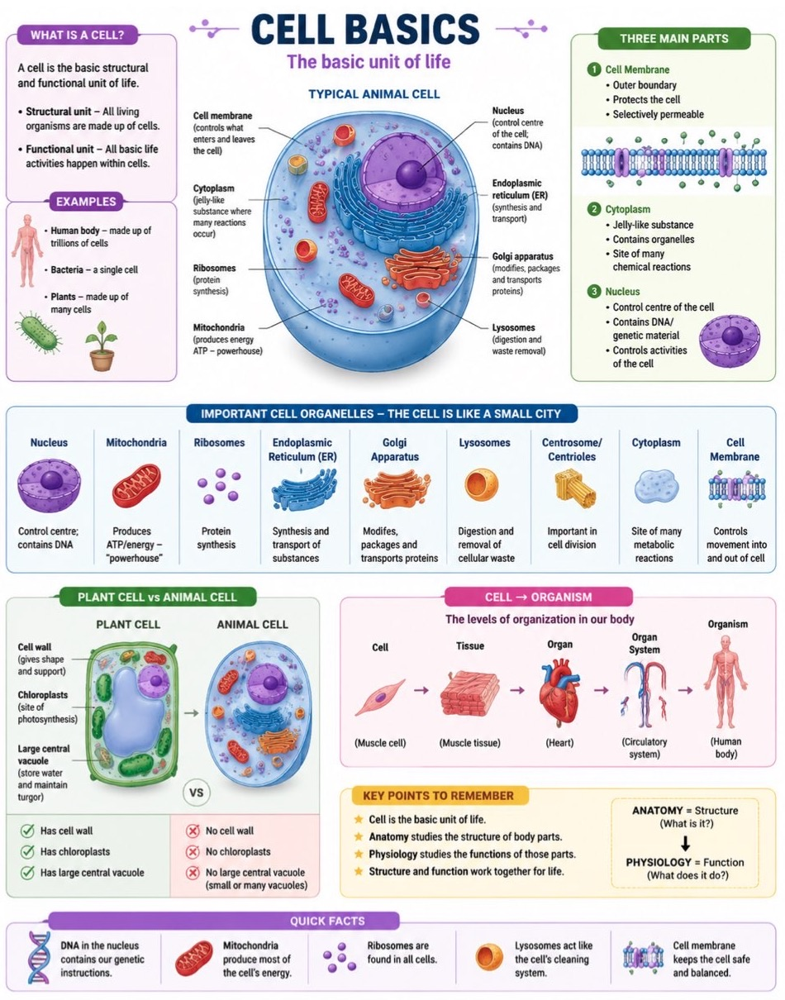

The Cell: The Unit of Life
Every living thing is built from cells. This page follows one cell from the outside in (membrane → cytoplasm → nucleus → organelles), then asks how things move in and out, and what it all adds up to.
- Cell (plasma) membrane – the outer boundary; decides what enters and leaves.
- Cytoplasm – everything between the membrane and the nucleus: the jelly-like cytosol plus the organelles.
- Nucleus – the control centre; holds the DNA.
- Nucleolus – inside the nucleus; makes ribosomal RNA for ribosomes.
- Rough ER – folded membrane studded with ribosomes; makes and folds proteins.
- Golgi apparatus – stacked sacs; modifies, sorts and packs.
- Mitochondrion – the power station; makes most of the cell's ATP.
- Ribosomes – tiny protein-building machines, free or on the rough ER.
- Lysosome – digestive bag; the cell's clean-up and recycling.
- Centrosome – organises the microtubules and the spindle for cell division.
A cell is a tiny factory with a security gate. The gate (membrane) controls what comes in and goes out. The factory floor (cytoplasm) is where the work happens. The manager's office (nucleus) holds the instruction manual (DNA). Everything else on this page is a department on that floor, or a rule for the gate.
A cell is both the structural unit (the body is built from cells) and the functional unit (cells carry out the basic activities of life). Some organisms are a single cell (bacteria, amoeba: unicellular); humans are multicellular, built from many different kinds of cell.Cell Study Notes
- All living things are made of cells.
- The cell is the fundamental unit of life.
- All cells arise from pre-existing cells.
Points 1 and 2: Schleiden and Schwann. Point 3: Virchow.Cell Detailed Notes
The three parts of every cell: Membrane (gate) · Cytoplasm (floor) · Nucleus (office).
Virchow's line: Omnis cellula e cellula, “every cell from a cell”.
1BHow we found out: the discovery of the cell
| When | Who | What happened |
|---|---|---|
| 1665 | Robert Hooke | Published Micrographia. A thin slice of cork showed box-like compartments, like a honeycomb. He called them cells, after the small rooms (cells) of a monastery. |
| c. 1838–39 | Matthias Schleiden (botanist) and Theodor Schwann (physiologist) | Compared plant and animal tissue and concluded that both are made of cells and the cell is the basic unit of living things.date from standard histories |
| 1855 | Rudolf Virchow | Answered where new cells come from: all cells arise from pre-existing cells. |
Corrected ideas. Schleiden thought new cells formed from a seed inside the nucleus; Schwann thought animal cells crystallised out of fluid between cells. Virchow showed new cells do not appear from nowhere. Also: Hooke saw the walls of dead cork cells, so “first to see cells” is a simplification; Leeuwenhoek soon saw living cells. New cells come from cell division (mitosis and meiosis), the basis of growth, repair and reproduction.
1CKinds of cell
| Compare | Prokaryotic (e.g. bacteria) | Eukaryotic (plant, animal, human) |
|---|---|---|
| Nucleus | No nuclear membrane; no true nucleus | Membrane-bound nucleus: the defining feature |
| Organelles | No membrane-bound organelles | Membrane-bound organelles (ER, Golgi, lysosomes, mitochondria...) |
| Cytoplasm is... | Everything inside the cell membrane | Everything between the cell membrane and the nuclear membrane |
- Both are eukaryotic; the nucleus is the striking similarity.
- Plant cells have a cell wall outside the membrane (and chloroplasts, and a large central vacuole). Animal cells have no cell wall, which is why their boundaries were harder to see in early microscopes.
- Vacuoles are not found in every cell.
Chloroplasts and the large central vacuole: from the Cell Basics chart below.Cell Detailed Notes; Cell Basics chart
- Somatic cells: ordinary body cells (muscle, skin, liver, nerve).
- Germ cells: reproductive cells that give rise to gametes: sperm (male), ovum (female).
- Humans: 46 chromosomes = 23 pairs; females XX, males XY.
Gametes carry half the number (23).general biology
| Cell | Nuclei | Reason (from your notes) |
|---|---|---|
| Most eukaryotic cells | One | The usual case. Every eukaryotic cell has at least one nucleus. |
| Liver cell | More than one | The liver removes harmful substances and secretes a lot of protein; two nuclei can make more protein at once. |
| Skeletal muscle fibre | Many | The cell is very large and needs a lot of protein to survive, grow and repair. (Many myoblasts fuse into one long fibre.) |
| Mature red blood cell | None (and no mitochondria) | Its job is carrying oxygen; leaving out the nucleus and mitochondria leaves room for as much haemoglobin as possible. |
Source conflict. Your notes say smooth muscle cells in the intestine have more than one nucleus. Standard textbooks say smooth muscle cells have one nucleus; it is skeletal muscle fibres that are multinucleate. This page follows the textbook. Answer to your own open question: a mature red blood cell cannot divide (no nucleus, so no new mRNA or protein); it is replaced by new cells made from stem cells in the bone marrow, and lives about 120 days.

1DSyllabus map: where each Unit 1 topic lives
Q1 → the basic structural and functional unit of life (add: made of membrane, cytoplasm and nucleus). Q2 → any one with its job in a few words, e.g. mitochondrion (makes ATP), nucleus, ribosome, Golgi, lysosome. If a 5-marker asks for the cell theory or the three parts, use the lists above.
“Every living thing is made of cells, and every cell comes from another cell. Each one has a skin that guards what goes in and out, a jelly inside where the work happens, and a nucleus with the instructions. Bacteria have no real nucleus; your cells do.”
The Plasma Membrane
A film only 5–10 nanometres thick that separates the cell from the outside world, and still decides what comes in, what goes out and who the cell is.
- Phospholipid head – phosphate group; hydrophilic (water-loving), so it faces the watery outside and inside.
- Fatty-acid tails – two chains; hydrophobic (water-fearing), so they hide in the middle, back to back. Together the two layers are the bilayer.
- Peripheral protein – sits on the outer or inner surface.
- Channel protein (integral) – a tunnel; lets ions such as Na⁺, K⁺, Ca²⁺ through when open.
- Carrier protein (integral) – picks up one specific molecule, changes shape and releases it on the other side.
- Cholesterol – sits between the tails; keeps the membrane stable, flexible and sound.
- Carbohydrate chains – on glycoproteins and glycolipids at the outer surface; the cell's ID tag.
Draw a phospholipid as a balloon with two tails. The balloon (head) loves water; the tails hate it, like oil. A cell is watery inside and outside, so the heads point to the water on both sides and the tails tuck into the middle. Nobody designs this; it is simply the arrangement that keeps oil away from water. The result is a stable barrier that is also fluid: the lipids slide past each other, which lets cells change shape and move.
The word mosaic says that lipids, proteins and carbohydrates (plus cholesterol) are scattered through it like tiles. In drawings we use two lines; under the microscope it is a busy, moving structure. The model was proposed by Singer and Nicolson. Plasma membrane and cell membrane mean the same thing.Cell Detailed Notes; Cell Study Notes
- Regulates what enters and leaves (selective permeability).
- Moves molecules across: diffusion for small uncharged ones, transport proteins for the rest.
- Communicates: receptor proteins bind signal molecules.
- Recognises: glycoproteins and glycolipids mark the cell as “self”.
Also: protects the cell, separates inside from outside, helps maintain the internal environment.Cell Detailed Notes; Cell Study Notes
The school gate. The guards (membrane) let the right people in (selective), the doors (channels and carriers) are only for those with permission, the ID card (glycoproteins) says who you are, and the notice board (receptors) receives messages.
PRO-CHO-LIP: the membrane has proteins, carbohydrates and lipids (plus cholesterol).
2BWhat can cross on its own, and what needs help
| Substance | Crosses alone? | Why |
|---|---|---|
| Oxygen, carbon dioxide | Yes, readily | Small and uncharged: the heads do not attract or repel them and the tails do not block them. They move down their concentration gradient. |
| Water | Slowly | Small but slightly charged (oxygen end partly negative, hydrogen ends partly positive), so the heads attract it. Channels called aquaporins speed it up. |
| Glucose | No | Slightly larger; needs a transport protein. |
| Ions (Na⁺, K⁺, Ca²⁺) | No | Charged: they cluster around the heads and cannot cross the hydrophobic tails. Need channels or pumps. |
| Large molecules (big proteins) | No | Too big to fit through; leave or enter in vesicles (endo-/exocytosis, Section 5). |
| Channel proteins | Carrier proteins | |
|---|---|---|
| Picture | Tiny tunnels; gates that open and close | Revolving doors |
| How they work | Let ions (Na⁺, K⁺, Ca²⁺) flow through when open | Pick up one specific molecule (e.g. glucose), change shape, release it on the other side |
| Selectivity | By ion | Each carries only its own molecule, like a personal escort |
2CMessages and ID tags
- Touching cells: gap junctions pass messages instantly (two friends on walkie-talkies).
- Neighbouring cells: signal molecules travel a short distance.
- Distant cells: hormones travel in the blood (a letter to another city).
- The lock and key: a receptor on the surface is the lock; the signal molecule is the key. Only the right key triggers a response.
- Carbohydrate chains on glycoproteins and glycolipids act like a school ID: name, class, school.
- Immune cells scan the body and use these tags to recognise the body's own cells as “self” and to spot foreign invaders.
- Selectively permeable ≠ impermeable. Some things pass freely, some with help, some not at all.
- The membrane is not rigid. “Fluid” is part of the name of the model.
- Hydrophilic heads face outward; hydrophobic tails face inward, never the other way.
- Cell membrane vs cell wall: the wall is an extra outer covering in plant cells; animal cells have only the membrane.
Open with the definition (outer boundary, selectively permeable). Then structure: fluid mosaic model; phospholipid bilayer (hydrophilic heads out, hydrophobic tails in); proteins (peripheral and integral: channels, carriers, receptors); cholesterol; carbohydrate chains. End with the four functions. A neat labelled sketch of Figure 2 is worth marks.
“The cell's skin is made of fat molecules arranged in two layers, with their water-loving ends facing out and their oily ends hidden inside. Proteins are stuck in it like doors: some are open tunnels for tiny charged particles, some are carriers for particular molecules like glucose. Sugar chains on the outside work like name tags. Oxygen just slides through; most other things need a door.”
Go deeper · why the bilayer builds itself
In water, the tails of phospholipids cannot make contact with water, so the molecules swing round until the tails face each other and the heads face the water. A double layer with the tails inside has no exposed tail anywhere except at its edges, and the edges seal into a closed bubble. That is why a membrane forms a boundary around a space without any instruction.general biology
Cholesterol acts as a stabiliser: it stops the tails packing too tightly (which would stiffen the membrane) and stops them moving too freely (which would make it leaky).general biology
Cytoplasm & Nucleus
The working floor and the control room: where the cell does its chemistry, and where its instructions are kept.
3ACytoplasm, cytosol and the cytoskeleton
| Cytosol | Cytoplasm | |
|---|---|---|
| What it is | The fluid part: water with dissolved ions and molecules | The cytosol plus all the organelles (excluding the nucleus) |
| Contains | Glucose and other sugars, amino acids, ions such as Na⁺ and K⁺ | Cytosol, organelles, cytoskeleton |
| Why it matters | The medium for many chemical reactions; protein synthesis on free ribosomes happens here | The working area of the cell |
Wording check. When we say the cytoplasm is “jelly-like”, we are really describing the cytosol. Your notes also say protein synthesis happens in the cytosol: that is true for free ribosomes; proteins made on the rough ER are made on its surface (Section 4).
- Supports the organelles inside the cell membrane.
- Provides the medium for metabolic activities and essential functions such as waste breakdown.
- Maintains the cell's shape and structure and keeps organelles in place.
- The “bones of the cell”: a network of protein filaments and motor proteins that gives shape and support.
- Three kinds: microfilaments, intermediate filaments, microtubules.
- Jobs: cell movement, transport of molecules (vesicles ride on its tracks), cell division and signalling.
Why organelles do not drift and collide: the cytoskeleton holds them in place. The full three-filament network is eukaryotic; bacteria have simpler filaments.Cell Detailed Notes
Peel a thin, transparent layer from the inside of an onion, place it on a slide with a drop of stain and look under a microscope. You see many small brick-like units: the cells. Each shows three regions: A the boundary (cell membrane), B a large dark-stained portion (nucleus) and C the region between A and B (cytoplasm). Onion cells also have a cell wall as an extra covering outside the membrane.Cell Detailed Notes
3BThe nucleus: control centre
- Nuclear envelope – two membranes. The inner one covers the nucleus; the outer one covers it too and then extends and folds out to form the endoplasmic reticulum.
- Nuclear pores – small openings through the envelope; substances (such as mRNA) enter and leave here.
- Chromatin – DNA wrapped with proteins; in a working cell it looks like a tangled ball of yarn. About 2 m of DNA is packed in a nucleus about 10 µm wide.
- Nucleolus – the region where ribosomal RNA (rRNA) is made. rRNA plus proteins makes ribosomes, which leave for the cytoplasm.
- Rough ER – continuous with the outer nuclear membrane, which is why it lies close to the nucleus.
The nucleus is the cell's CPU, or its manager's office. It is found in all eukaryotic cells (at least one each) and is nearly spherical, about 10 micrometres across. The name comes from a Latin word for “kernel” or “seed”, the central part of a fruit; Robert Brown named it in the 1800s. A membrane-bound nucleus is the defining feature of a eukaryote.Cell Detailed Notes
The nucleus is not the only double-membraned organelle: the mitochondrion is the other.
3CDNA, gene, chromatin, chromosome: the same material at different scales
- DNA – the genetic information; the instruction book.
- Gene – a specific section of DNA with the instructions for one functional product (usually a protein).
- Chromatin – DNA associated with proteins, generally in a less condensed form, in the working cell.
- Chromosome – highly condensed DNA and protein, clearly visible during cell division.
- Humans: 46 chromosomes = 23 pairs. Sex chromosomes: XX female, XY male.
A book: DNA = the text. Gene = one chapter. Chromatin = the book lying open on the desk. Chromosome = the book closed and tied for transport. DNA → genes; DNA + proteins → chromatin; condensed chromatin → chromosomes.
Chromatin wording. Your video notes list DNA, proteins and rRNA in chromatin. Textbooks describe chromatin as DNA plus proteins (histones); rRNA is made in the nucleolus. This page uses the textbook form. Similarly, the nucleus directs protein synthesis by sending mRNA; the proteins themselves are built at ribosomes.
3DWhy the nucleus is the CPU: how a gene becomes a protein
Whatever a cell does, some protein is involved: enzymes, membrane channels, receptors, hormones, structural fibres. DNA contains the genes that tell the cell how to make each one. But proteins are built at ribosomes outside the nucleus, and DNA is too valuable to take out of the safe nucleus. So the cell makes a copy of the needed gene: messenger RNA (mRNA). The mRNA leaves through a nuclear pore, reaches a ribosome, and the ribosome builds the protein. That is the sense in which the nucleus is “in control”: it decides which proteins are made, and when.Cell Detailed Notes
Structure: nuclear envelope (two membranes) with pores; chromatin (DNA + protein); nucleolus (makes rRNA, hence ribosomes). Functions: stores the genetic information; controls cellular activities and gene expression; directs protein synthesis through mRNA; essential for growth and division. Add “found in all eukaryotic cells, usually one”. Mention the red blood cell as the exception for a bonus mark.
- Cytosol ≠ cytoplasm (the cytoplasm includes the organelles).
- Chromatin ≠ chromosome: the same material, loose versus condensed.
- The nucleus does not make proteins. It sends the instructions.
- Nucleus ≠ nucleolus. The nucleolus is a region inside the nucleus.
“The nucleus is the head office. It keeps the master copy of all the instructions (DNA) locked inside. When the cell needs a protein, it photocopies the right page (mRNA) and sends it out to the workshop, where ribosomes build what the page describes. The original never leaves.”
Organelles & the Endomembrane System
Tiny compartments, each with its own task. A few of them work together as one production-and-delivery line.
4AAll the organelles at a glance
| Organelle | Job | Hook | Rich in |
|---|---|---|---|
| Nucleus | Stores DNA; controls the cell | Manager's office | All eukaryotic cells |
| Mitochondria | Make ATP (aerobic respiration) | Power station | Heart and skeletal muscle |
| Ribosomes | Join amino acids into proteins | Protein machines | Free in cytosol, or on rough ER |
| Rough ER | Makes, folds and sends proteins | Protein factory + conveyor | Protein-secreting cells |
| Smooth ER | Lipids and steroids; detoxification; calcium storage | Lipid and detox centre | Liver, muscle, steroid-hormone cells |
| Golgi apparatus | Modifies, sorts and packs; forms lysosomes | Post office | All cells; busiest in secretory cells |
| Lysosomes | Digest foreign material and worn-out parts | Garbage disposal and recycling | Macrophages |
| Centrosome and centrioles | Organise microtubules; form the spindle in division | Division organisers | Animal cells |
| Vacuoles | Storage of water, ions and other substances | Storage room | Much larger in plant cells |
| Nissl bodies | Protein synthesis in neurons (rough ER + ribosomes) | The nerve cell's protein factory | Nerve cells |
| Secretory granules | Store substances waiting to be released | Parcels awaiting delivery | Secretory cells |
| Cytoskeleton | Shape, support, movement, internal transport | Building framework | Every cell |
Class source: Cell Study Notes (organelles and analogies) and Cell Detailed Notes. “Rich in” column: partly general physiology.Cell Study Notes
4BMitochondria: the power stations
- Outer membrane – smooth outer boundary.
- Inner membrane – the second membrane (mitochondria are double-membraned, like the nucleus); folded inwards.
- Cristae – the folds; more surface for the energy-making steps.
- Matrix – the inner space where much of the aerobic energy release takes place.
Cells run on ATP, the usable form of energy. Glycolysis in the cytosol gives a small amount of ATP without oxygen; mitochondria then use oxygen to finish the job and make much more. That is why muscle and heart, which need lots of ATP, are packed with them, and why red blood cells, with no mitochondria, have to rely on glycolysis alone.Cell Study Notes; Cell Detailed Notes §10
Mitochondria are the “powerhouses” of the cell: they produce ATP (energy) by aerobic respiration. One more fact for the second mark: found in large numbers in cells that need a lot of energy, such as muscle cells.
4CThe endomembrane system: one production line
- Ribosomes on the rough ER build the polypeptide chain and release it into the ER's inside space (the lumen).
- The ER folds the chain into a working protein and may modify it, for example by adding a sugar (a glycoprotein).
- A vesicle buds from the ER and fuses with the Golgi.
- The Golgi modifies the protein further and tags it with its destination, like an address label.
- A vesicle forms at the trans face of the Golgi.
- The vesicle fuses with the cell membrane (exocytosis) and the product leaves. Vesicles that stay inside become lysosomes or vacuoles.
Unlike the digestive or respiratory system, the endomembrane system is made of organelles, not organs. The members are those whose membranes exchange material by vesicles: rough and smooth ER, Golgi, lysosomes, vacuoles (not in every cell), plus the nuclear membrane and the cell membrane. “Endo” means inside; the cell membrane counts because vesicles fuse with it. Their shared job is modifying, packaging and transporting proteins and lipids. Because every membrane is a phospholipid bilayer, a vesicle can merge with another membrane without leaking, and its lipids simply become part of the new membrane.Cell Detailed Notes
4DER, Golgi and lysosome in detail
| Rough ER (RER) | Smooth ER (SER) | |
|---|---|---|
| Ribosomes | Attached to the outer surface: rough look | None: smooth membrane |
| Makes | Functional proteins (mostly ones to be secreted) | Lipids (fats, waxes, sterols) |
| Other jobs | Folds and modifies proteins; sends them to the Golgi | Calcium storage (in muscle: released with each nerve impulse so the muscle can contract); detoxification (in liver: makes drugs water-soluble so they leave in urine) |
| Abundant in | Protein-secreting cells, e.g. stomach chief cells (digestive enzymes) | Steroid-hormone cells (ovary, testis, adrenal cortex); liver; muscle |
- Stacked flattened sacs (cisternae) lying just below the ER; found in all cell types.
- Cis face (towards the ER) receives vesicles; trans face (towards the membrane) sends vesicles out.
- Converts proteins to phosphoproteins, lipoproteins or glycoproteins as demand needs, and tags them with a destination.
Where a trans-face vesicle goes: secreted out of the cell (secretory proteins and lipids); fuses with the cell membrane and helps it grow (phospholipids); or stays inside as a lysosome or vacuole.
- Heterophagy: digests a foreign substance (a macrophage engulfs a bacterium; the lysosome fuses with it and releases acidic hydrolytic enzymes).
- Autophagy: digests the cell's own old or faulty organelles (e.g. a faulty mitochondrion).
- Apoptosis (programmed cell death): breaks down an entire old or hopelessly infected cell.
Lyso = digest, soma = body: the “suicide bag”. It is filled with hydrolytic enzymes (protease, lipase, carbohydrase, phosphatase) at an acid pH: harmless while the bag is intact, dangerous only if it bursts.
Points to verify. (1) Many syllabi say lysosomes digest the whole cell in apoptosis, so write that if your paper expects it; modern textbooks describe apoptosis as run mainly by enzymes called caspases, with lysosomal release linked more to self-digestion. (2) The “drug dose rises because the SER detoxifies faster” idea is a simple picture; tolerance has several causes. (3) The transcript says “carboxylase”; “carbohydrase” (carbohydrate-digesting enzymes) is probably what was meant. (4) The vacuole lesson is not in your notes yet beyond: vacuoles are not in every cell, can form from Golgi vesicles, and a food vacuole holds a particle taken in by phagocytosis (Section 5).
Rough = Ribosomes = Protein. Smooth = lipids, steroids, detox, calcium.
Cell as a factory: Membrane = gate · Cytoplasm = floor · Nucleus = office · Mitochondria = power station · Ribosomes = machines · RER = protein line · SER = lipid line · Golgi = post office · Lysosomes = recycling · Vacuoles = storage · Cytoskeleton = framework.
- Ribosomes are not membrane-bound, so they are not part of the endomembrane system, but they sit on its rough ER.
- The nucleus does not make ATP; the mitochondria do. (And the nucleus is double-membraned like the mitochondrion.)
- RER makes proteins to be exported; free ribosomes make proteins the cell uses itself.
- Lysosome vs vacuole: lysosomes digest; vacuoles store.
“Think of a cell as a factory with a built-in postal service. The nucleus sends out an order; ribosomes on the rough ER build the product; the ER checks and folds it, sends it by little bubbles to the Golgi, the post office, which labels it and posts it either out of the cell or to the cell's own recycling depot, the lysosome. The mitochondria keep the whole place powered.”
Go deeper · peroxisomes, plant-only organelles and other items not in your notes
Not in your notes yet: ribosomes as organelles in detail, centrioles in detail, the cell wall and the full vacuole lesson. A short version for each, from general biology:
Ribosomes are made of rRNA and protein, with no membrane; found free and on the rough ER. Centrioles are a pair of small tube-like structures in the centrosome; they organise the spindle for division. Cell wall (plant cells): rigid outer covering that gives shape and support. Chloroplasts (plant cells): site of photosynthesis. Peroxisomes break down fatty acids and neutralise hydrogen peroxide.general biology; not in your class notes
Movement of Substances
Small uncharged molecules slip through; water follows the solute; charged and larger things need doors or pumps; very large things travel in bubbles.
The canoe. A canoeist going downstream can nap and drift: passive. One going upstream must paddle hard: active. Cells work the same way. Substances flow “downhill” (from where there is more to where there is less) for free, and the cell spends energy (ATP) only to push them uphill.Cell Detailed Notes
There are three gradients to know: a concentration gradient (difference in amount), an electrical gradient (difference in charge: like charges repel, opposite attract) and the combined electrochemical gradient. Ions follow the combined one.
5AThe vocabulary
- Solvent – there is more of it, and it does the dissolving (usually water).
- Solute – there is less of it; it is dissolved (e.g. sugar).
- Solution – solvent + solute.
- Concentration – how much of a particle per unit of space.
- Hypertonic – high solute concentration. Hypotonic – low. Isotonic – equal. (Relative terms: hyper = too much, hypo = too little.)
Diffusion is the spreading of particles from an area of high concentration to one of low concentration. It happens in gases and in solutions, until concentrations are roughly equal (equilibrium).
Why? There is no magic: particles move randomly. A particle in a crowded area is more likely to bump into others, so over time more end up in the emptier area than the reverse. With huge numbers of particles the result is a near-certainty.
5BOsmosis: water follows the solute
Imagine a membrane with holes that water fits through but sugar does not. Water moves freely both ways. But the sugar cannot leave and it blocks water on the sugar side from reaching the holes, so water is more likely to enter the sugar side than to leave it. The result is a net flow of water toward the side with more solute until the chances match.
Osmosis is the diffusion of water across a semipermeable membrane where the solute cannot cross. Water moves from the hypotonic (low solute) side to the hypertonic (high solute) side. Counted as water, that is high water concentration to low: the same rule as diffusion.
- Exam rule: water moves toward the side with more solute.
- Osmosis is movement of water; diffusion is movement of solute (or any particle).
- No ATP is needed: osmosis is passive.
- Cells in hypotonic surroundings swell; in hypertonic, shrink; in isotonic, stay the same.general physiology; not in your notes yet
5CPassive and active transport
| Passive transport | Active transport | |
|---|---|---|
| Direction | With (down) the gradient: high → low | Against (up) the gradient: low → high |
| Energy | None needed; it just happens | Needs ATP |
| Kinds | Simple diffusion, facilitated diffusion, osmosis | Pumps (e.g. Na⁺/K⁺ pump); bulk transport (endo-/exocytosis) |
| Picture | Perfume spreading through a room; the canoe going downstream | Pushing a ball up a hill; paddling upstream |
Some substances cannot easily cross the lipid layer on their own (glucose, ions), so they use membrane proteins (channels or carriers). It is still high → low and needs no ATP. Picture a person who cannot walk through a wall but uses a doorway: no energy is needed to pass through the door.Cell Study Notes
5DThe sodium–potassium pump
- The pump is a carrier protein in the membrane. Na⁺ binds it from the inside; ATP's energy changes its shape; the Na⁺ is released outside. Then 2 K⁺ are taken in.
- ATP pays for the work: this is active transport.
- Outside is rich in Na⁺ and already more positive, so pushing more Na⁺ out is against both the concentration and the electrical gradient.
- Inside is rich in K⁺. A channel open only to K⁺ lets it leak out passively, down its gradient; the pump brings it back.
“3 Na⁺ OUT, 2 K⁺ IN, ATP required.” One ion, two routes: K⁺ leaves by a channel (passive) and returns by the pump (active). The pump helps maintain the electrical and chemical conditions that nerve and muscle cells depend on.Cell Study Notes
5EBulk transport: endocytosis and exocytosis
| Phagocytosis (“cell eating”) | Pinocytosis (“cell drinking”) | Receptor-mediated | |
|---|---|---|---|
| Takes in | Large particles, e.g. a bacterium | Fluid and what is dissolved in it | Specific substances that bind to receptors first |
| Result | A membrane-bound food vacuole, often taken to a lysosome | A small vesicle of fluid | A vesicle carrying only the bound substance |
| Example | Immune cell (macrophage) engulfing microbes | Cells sampling the surrounding fluid | Specific molecules brought into the cell |
The membrane wraps around the material and pinches off, so the material ends up inside the cell wrapped in membrane (a vesicle). All forms are endocytosis; they need energy. How the membrane “knows” what to engulf is not fully understood; the cytoskeleton is thought to help.Cell Detailed Notes; Cell Study Notes
- Proteins are made in the ER.
- They bud off in vesicles and merge with the Golgi for further processing.
- They bud off the Golgi in new vesicles.
- The vesicles travel on cytoskeleton tracks (pushed by ATP-using motor proteins) to the plasma membrane and merge with it, releasing the contents.
Examples: hormone secretion, enzyme secretion, and the release of neurotransmitters from neurons (the chemical signal to the next neuron). In “kiss-and-run” exocytosis the vesicle merges only partly, releases its contents and buds back.
5FOne comparison table
| Process | Direction | ATP? | Needs protein? | Example |
|---|---|---|---|---|
| Simple diffusion | High → low | No | No | O₂, CO₂ |
| Facilitated diffusion | High → low | No | Yes (channel/carrier) | Glucose, ions |
| Osmosis | Water toward higher solute | No | Not necessarily (aquaporins speed it up) | Water into/out of cells |
| Active transport | Low → high | Yes | Yes (pump) | Na⁺/K⁺ pump |
| Endocytosis | Into the cell | Yes | Cytoskeleton, vesicles | Phagocytosis, pinocytosis |
| Exocytosis | Out of the cell | Yes | Cytoskeleton, vesicles | Hormones, neurotransmitters |
Passive = downhill = no ATP. Active = uphill = ATP. Facilitated diffusion is still passive: it only has a door.
- Osmosis vs diffusion: osmosis is the movement of water; the solute is the one that cannot cross.
- “Water moves to the dilute side” is wrong. Water moves toward the more concentrated solution.
- Facilitated diffusion is not active transport. It uses a protein but no ATP.
- Hypertonic describes the solution, not the cell; a cell placed in a hypertonic solution shrinks.
- The video explains osmosis by solute and by water concentration; for exams use the solute rule.
Open with “the membrane is selectively permeable”. Then in this order: passive (simple diffusion, facilitated diffusion, osmosis; high → low, no ATP) → active (Na⁺/K⁺ pump; low → high, ATP) → bulk (endocytosis: phagocytosis, pinocytosis; exocytosis) → a one-line example for each. The six-row comparison table above is the best structure to reproduce, and Figure 5 earns the diagram marks.
“Things flow from where there's lots to where there's little, like perfume across a room; that costs the cell nothing. Water does the same but follows the saltier side. When the cell must move something against that flow, like pumping sodium out, it spends ATP. And for really big things, it wraps them in a bubble of membrane and carries them in or out.”
Go deeper · aquaporins and the fate of the vesicle membrane
Water is small but slightly charged, so it crosses the lipid layer slowly. Aquaporins are channels that speed this up. Osmosis therefore does not strictly need a protein, but proteins make it fast.Cell Detailed Notes
Every membrane here is a phospholipid bilayer, so when a vesicle fuses with the cell membrane its phospholipids become part of it. That is how the cell membrane grows, and why endocytosis (which removes membrane) and exocytosis (which adds it) roughly balance.general physiology
Not in your notes yet: the effects of hypotonic, isotonic and hypertonic solutions on cells are described above from general physiology; confirm with your teacher whether the exam wants plant-cell turgor and plasmolysis as well.
What a Cell Needs, Makes and Becomes
The parts are now familiar. Here is the cell at work: its three production lines, and how one fertilised egg ends up as muscle, nerve and blood.
6AThree production lines
| Input | Comes from | Used for |
|---|---|---|
| Carbohydrate, fat, protein | Food, digested to glucose, fatty acids and amino acids | Fuel (ATP) and raw material for building |
| Oxygen | Breathing, carried by blood | Final stage of energy release in the mitochondria |
| Water | Drinking, food | The medium for all reactions; not an energy source |
| Essential amino acids, vitamins, minerals | Food only | The body cannot make them |
general physiology (Cell Detailed Notes §10)
- The body burns carbohydrate first, then fat. Protein is burned for energy mainly when the other two run short, because protein is needed for building.
- About 4 kcal/g for carbohydrate and protein, 9 kcal/g for fat.
- Glycolysis (cytosol, no oxygen) gives a little ATP; mitochondria with oxygen make much more. Red blood cells rely on glycolysis alone.
- 9 essential amino acids must come from food. A complete protein has all 9 (eggs, milk, meat, fish, soy, quinoa). Most plant proteins are incomplete: cereals are low in lysine, pulses in methionine; combine them over the day (dal with rice).
- Lipids are more than fat: fats and oils, phospholipids (the membrane), cholesterol and steroid hormones. Fat is one lipid and the main energy store.
6BHow cells become different
A muscle cell and a nerve cell carry the same DNA; they differ because different genes are switched on. A cell is what its active genes make it. Early in development, cells in different positions receive different chemical signals from their neighbours; a signal binds a receptor, a chain of reactions (signal transduction) passes the message in, transcription factors switch particular genes on or off, and the cell builds the proteins and organelles of its new type and commits to it.
Does a cell “know” what to become? No. Genes plus signals set a program, refined by evolution.Cell Detailed Notes §11
- Morphogens (e.g. Sonic hedgehog): spread from a source and form a gradient; a cell reads its position from the concentration.
- Growth factors: tell cells to divide or take a certain path.
- Hormones: travel in blood and act on cells with the right receptor.
- Direct contact: molecules on one cell bind receptors on its neighbour (cell recognition, Section 2).
| Specialised cell | Special feature | Why |
|---|---|---|
| Muscle | Many mitochondria, contractile proteins; many nuclei in skeletal muscle | Needs lots of ATP and force. Exercise signals the fibre to build more mitochondria. |
| Red blood cell | No nucleus, no mitochondria, biconcave | Carries as much oxygen (haemoglobin) as possible; made in bone marrow, lives ~120 days |
| Gland cell | Lots of rough ER and Golgi | Makes and secretes proteins |
| Liver cell | Lots of smooth ER and mitochondria | Metabolism and detoxification |
| Nerve cell | Long extensions, many receptors, Nissl bodies | Carries signals |
| Fat cell | One large lipid droplet | Stores energy |
6CFrom cell to body: the chain you should be able to say
CELL → Membrane + Cytoplasm + Nucleus → Organelles → DNA → Genes → Chromosomes → Membrane transport (diffusion | osmosis | active transport | endocytosis | exocytosis) → stable internal environment → HOMEOSTASIS.
Why does the cell care about homeostasis? Cells work properly only when their surroundings stay within suitable limits. The membrane helps keep the inside steady by controlling water, ions, nutrients and waste. Continue with homeostasis and feedback on the Tissues page, and how cells build tissues, organs and systems.
2 marks: “Name one organelle” (Q2) and “role of mitochondria” (Q7): see Section 4. 5 marks: “Describe the structure of the cell membrane / nucleus / transport across the membrane”: Sections 2, 3 and 5. 10 marks (Section C): the paper links physiology to yoga practice: use the cell facts in Section 7 as supporting detail, not as a standalone topic.
“Every cell in your body began as one fertilised egg and carries the same instruction book. As the embryo grows, chemical messages tell each cell which chapters to read: muscle cells read the chapters on contraction, nerve cells those on signalling, red blood cells throw out their nucleus to carry oxygen. Then each cell runs three lines: build proteins, build fats, make energy.”
Go deeper · cell division in brief (named, not explained, in your notes)
A parent cell copies its genetic material and passes it on. Two kinds of division keep life going: mitosis (one cell → two identical cells; used for growth and repair) and meiosis (one cell → four cells with half the chromosomes; used to make sperm and eggs).general biology; your notes only name the two types
| Mitosis | Meiosis |
|---|---|
| Body (somatic) cells | Germ cells (to make gametes) |
| 2 daughter cells, 46 chromosomes each (humans) | 4 daughter cells, 23 chromosomes each |
| Daughter cells identical to the parent | Daughter cells genetically different |
The centrosome and centrioles organise the spindle that pulls the chromosomes apart (Section 4). Mature red blood cells cannot divide (no nucleus).
The Cell and Yoga Practice
Cell biology is groundwork, not a yoga topic. A few honest links are possible; no specific asana is claimed for any organelle.
| Cell fact | Where it meets yoga practice | Source and confidence |
|---|---|---|
| Mitochondria use oxygen to make ATP (Section 4) | Practices that improve breathing support oxygen delivery to the cells, which the mitochondria need. Pranayama is an example of such a practice; the notes do not say how much it changes oxygen delivery. | Cell Detailed Notes §10.6 Hedge: “may support”. |
| Smooth ER (sarcoplasmic reticulum in muscle) stores calcium; each nerve impulse releases it and the muscle contracts | Every asana that uses muscle (holding, lifting, balancing) depends on this cycle. It is the cell-level step behind any muscular effort. | Cell Detailed Notes §7.2 and §10.6 |
| Homeostasis: sweating and moving blood to the skin when hot (Tissues page, Section 2) | Sweating during practice is homeostasis at work. | Cell Detailed Notes §9 and §10.6 |
| Exercise signals muscle fibres to build more mitochondria (Section 6) | Regular, demanding practice (dynamic flows, sustained holds) is exercise; the adaptation described is general to exercise, and the notes do not state it for yoga specifically. | Cell Detailed Notes §11.4 Hedge: depends on practice and person. |
| Membrane, osmosis and the Na⁺/K⁺ pump keep water and salts balanced (Section 5) | Long practice in heat loses water and salt in sweat. Drinking water matters because cells rely on correct water and ion balance across their membranes, and nerve and muscle cells depend on the Na⁺/K⁺ gradient. | added reasoning (combines your Section 5 notes with general physiology) |
| Slow, relaxed breathing may shift the autonomic nervous system toward parasympathetic influence | Relaxation practices support the feedback loops (heart rate, blood pressure) that keep the internal environment steady. See the homeostasis section of the Tissues page. | Yoga & Human Body notes Hedge: “may”, depends on technique and person. |
- Do not say that a named asana strengthens the mitochondria, “detoxifies” the cell or repairs the membrane. Your notes give no such link.
- Do not present gene-expression effects of yoga as established. Say they are an emerging area of research.
- Keep traditional ideas separate from established physiology, as the Yoga & Human Body notes ask.
Write three short paragraphs: (1) energy: mitochondria make ATP with oxygen; breathing practices may support oxygen delivery; regular exercise builds mitochondria. (2) muscle action: calcium released from the sarcoplasmic reticulum lets muscle contract in every asana. (3) balance: the membrane regulates water and ions; sweating and relaxation are homeostasis at work. Close with the caution about emerging research.
“Yoga is done by cells. Every time a muscle holds a pose, calcium is released inside its cells so the muscle can contract, and mitochondria burn oxygen to pay for it. Breathing practice may help with that oxygen supply, and when you sweat or relax, your body is using its feedback loops to keep the inside steady. Beyond that, the science of how yoga changes cells is still being worked out.”
Sources: The Cell: Detailed Study Notes (your video-class notes, with the added §10–11 from the chat; points to verify kept); Cell Study Notes (teacher's PDF, incl. the Cell Basics chart); Yoga & Human Body notes (homeostasis, feedback, resting potential and autonomic sections); Ross & Wilson, Anatomy and Physiology in Health and Illness, and NCERT Biology for the “general physiology” tags; the Semester 1 question paper (Q1, Q2, Q7). The diagrams on this page are drawn for these notes except the Cell Basics chart, which is from your notes folder.